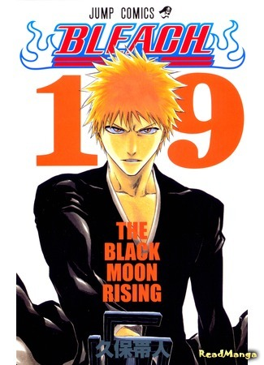

|  |
Описание:Однажды в спальню Ичиго Куросаки, пятнадцатилетнего юноши, способного видеть призраков с самого детства, врывается Шинигами, Рукия Кучики. Кучики, удивленная тем, что наш герой способен видеть её, поддаётся на провокацию и рассказывает Куросаки о том, кто такие Шинигами и что входит в обязанности проводников душ, но этот разговор прерывает рёв Пустого, злого духа, пожирающего души людей. Ичиго, пытаясь защитить семью, подставляет Рукию и она получает серьёзное ранение, мешающее сражаться. Она решает передать часть своих сил юноше, чтобы он мог постоять за себя, но тот поглощает всю её энергию и одолевает Пустого. В результате Ичиго сам становится Шинигами, а Рукия в то время ослабела и не могла выполнять работу проводника, поэтому она уговаривает Ичиго помочь ей. Так и начались эти увлекательные приключения Ичиго и Рукии! |
|